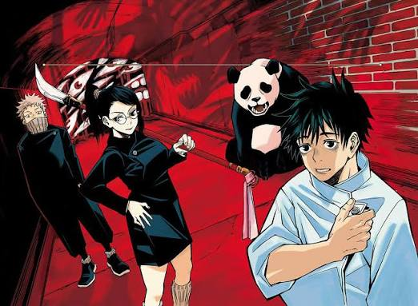
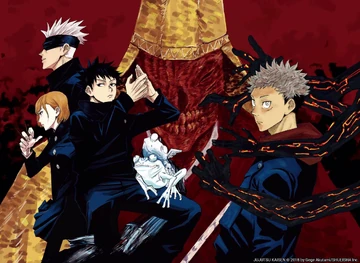
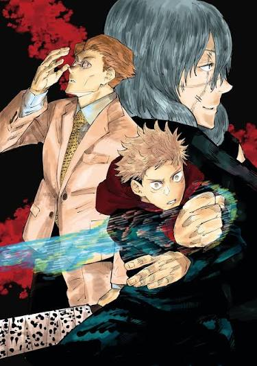
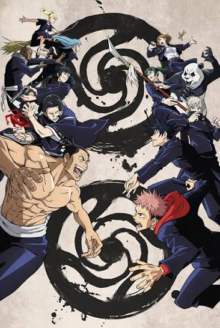
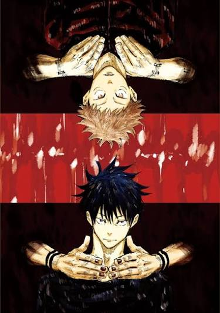
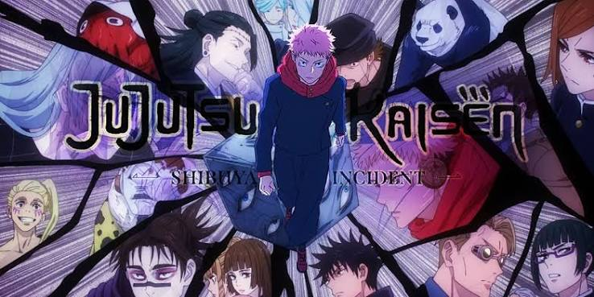
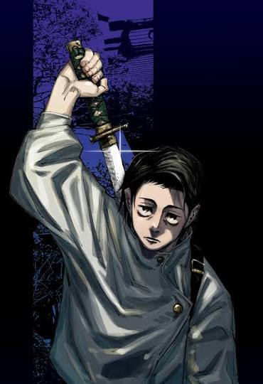
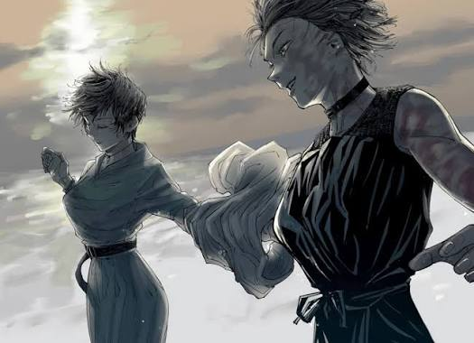
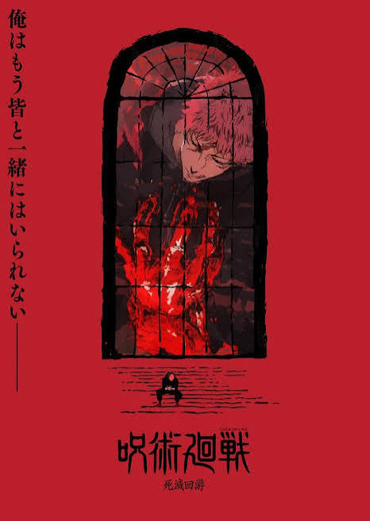
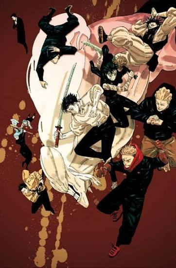

Story Arcs
The story divided into 11 arcs, counting the prequel. The anime has adapted them in order, so you can follow the series season by season.
The Early Years

Vol. 0 · FilmCursed Child
Prequel following Yuta Okkotsu, a boy haunted by a powerful curse, as he enters Jujutsu High.

Ch. 1–18 · Ep. 1–8Fearsome Womb
Yuji, Megumi, and Nobara take on their first Special Grade curse inside a detention facility.

Ch. 19–31Vs. Mahito
A curse born from human hatred hunts for souls, and Yuji faces it alongside Nanami.

Ch. 32–54Kyoto Goodwill Event
Tokyo and Kyoto students meet in an exchange tournament that is interrupted by real danger.

Ch. 55–64Death Painting
Yuji comes face to face with the cursed offspring known as the Death Painting Wombs.
The Turning Point And After

Ch. 79–136 · Ep. 30–47Shibuya Incident
Curses and sorcerer antagonists trap a whole Shibuya district.

Ch. 137–143Itadori’s Extermination
The aftermath: Yuji is branded a threat and the surviving sorcerers regroup.

Ch. 144–158Perfect Preparation
The sorcerers prepare as the next deadly plan to join The Culling Game.

Ch. 159–221Culling Game
Kenjaku’s battle royale and the students of Tokyo Jujutsu High must face curse users from various eras.

Ch. 222–271Shinjuku Showdown
The final war against Sukuna and the conclusion. Ending the manga on September 30, 2024.